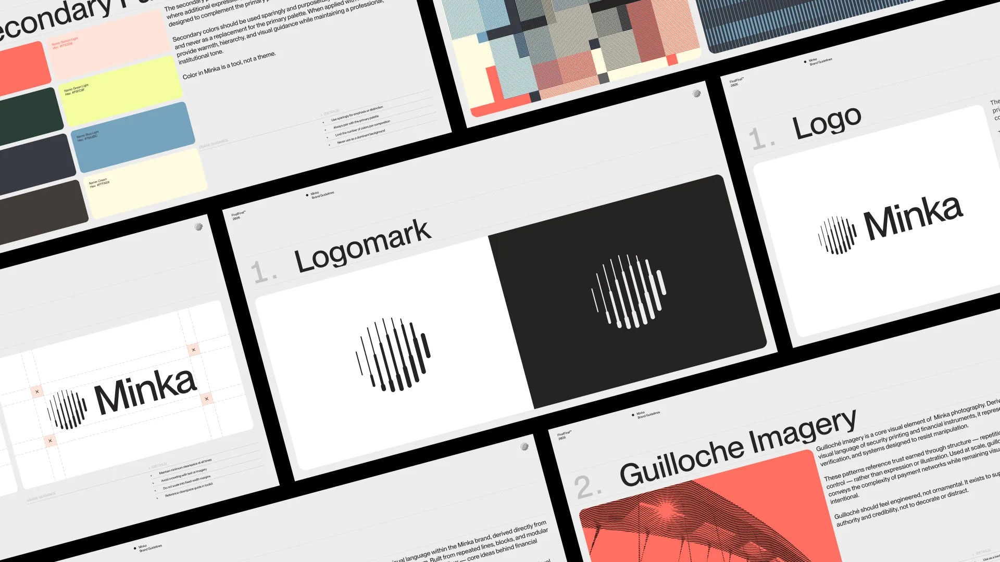
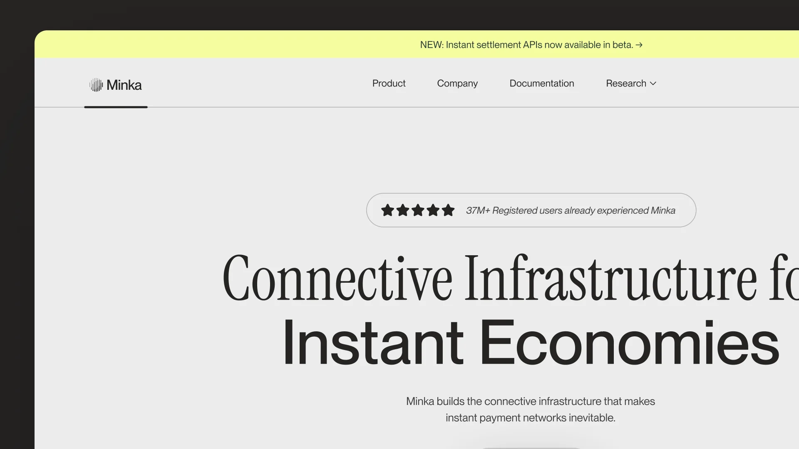
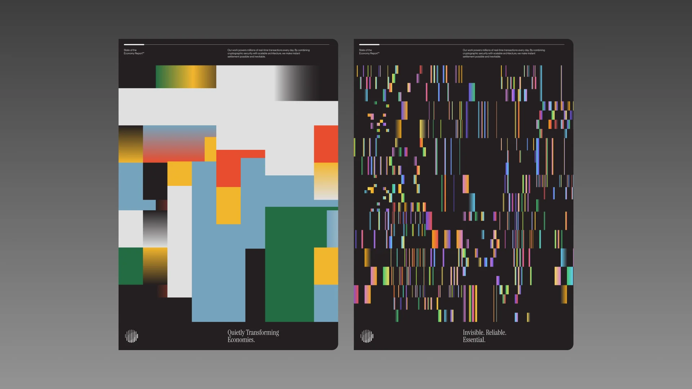
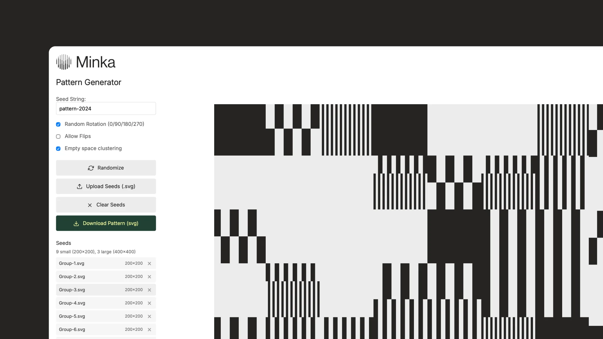
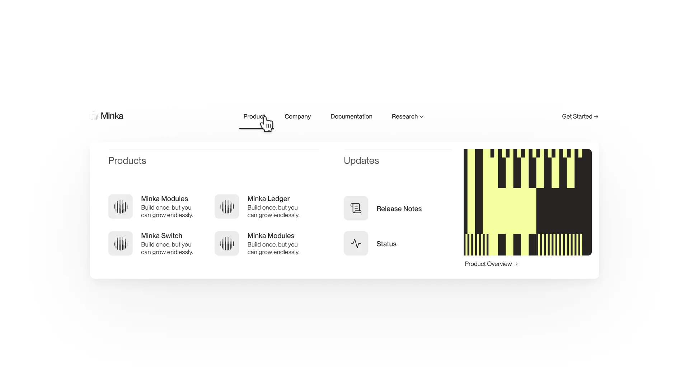

Minka
- Role
- Creative Director, Lead Brand Designer
- Team
- 3 people
- Discipline
- Brand strategy · Brand identity · Generative tool development
Project Summary
Minka is building the infrastructure that connects banks, financial institutions, and payment networks to make instant payments possible at a national scale. As lead designer, I helped evolve Minka’s brand identity into a cohesive, flexible visual system spanning typography, geometric patterns, product identities, motion, and brand applications. The result balances the credibility of established financial institutions with the clarity and energy of modern financial technology.
Team
- Aaron Johnstone, Motion Designer
- Ruth Facer, Delivery Lead
Shawn’s Role
- Creative Director
- Lead Brand Designer

Color in Minka is a tool, not a theme.

Guilloché should feel engineered, not ornamental.



Patterns should always feel purposeful, precise, and integrated — never ornamental or illustrative.




